孖仔帮与您分享双胞胎育儿经
点击蓝字
关注我们
文|圆圈妈
第
1
则
-THE FIRST-
「双胞胎」
4年前，这个词离我还很遥远。
偶尔在大街上看到双胞胎觉得非常稀奇，很想过去研究下这样神奇的群体是不是真的一模一样的样貌，一模一样的性格。
大概是上辈子在马路上捡到很多次一分钱交给了警察蜀黍，我真的有机会了。
1年后，我有了自己的双胞胎儿子，终于可以天天看着研究了。
从孕期知道怀上双胞胎，就开始研究双胞胎，更何况现在有了孖仔帮公众号，为了输出更多靠谱实用的双胞胎育儿干货，经常翻阅搜集国内外有关双胞胎的资料。
其实一直很想写关于双胞胎的科普，孕期群里经常冒出迷糊宝妈因为双绒双羊，单绒双羊，单绒单羊傻傻分不清？
但我不是专业医生，一直没有这个胆量，担心贻笑大方。据说孖仔帮有好多粉丝是医护人员，更让我不敢下手了。
而且几乎所有宝妈均可以在网上了解到关于双胞胎的资讯。
可能受文化层次各方因素的局限，我接触到的大部分双胞胎妈妈都对此一知半解。
我曾经把双胎科普文献电子档发给有需要的妈妈，可是收到一个一脸懵逼的表情。
是的，双胎妊娠的文献晦涩难懂，看了开头不想看结尾，或者看完了不知所云。
有次，看到两位网络医生在“有问必答”中，对“同卵双胞胎有可能是两个胎盘吗”的回复。以下是截图：
哎，好无语！我的强迫症又复发了！
我决定豁出去了！
花了七天七夜翻阅了双胎妊娠指南和国外一些关于双胞胎的PPT学术分享。经过整理，写下了这个简易版本的双胞胎科普。
我尽量用接地气的文字，附上简单直观的图片，让更多人看完后都能有所得。
第
2
则
-THE SECOND-
文末有附上资料来源，方便大家追踪原版，这一篇主要讲双胞胎分类和双胎妊娠的一些注意事项。
双胞胎的分类（三大类）
一、异卵双胞胎
由两个卵子分别受精形成，约占双胎妊娠的2/3。如图所示：
异卵双胞胎在遗传上与普通兄弟姐妹一样，共享约50％的基因，俗称“假双胞胎”。
每个胎儿都有各自的绒毛膜和羊膜，且不共享血管，性别上可以是两男OR 两女，或者一男一女。
这种双胎妊娠恐怕是万千女性最求之不得的了，相对同卵双胎妊娠，出现并发症的风险较低，若是龙凤胎，那简直完美到极致！
大多数的双绒双羊都是异卵双胎，只有极少数的双绒双羊是同卵双胎（后面会详细说到）
二，同卵双胞胎
由一个受精卵分裂而成，约占双胎妊娠的1/3。如图所示：
因单卵双胞胎是由一个卵子和一个精子受精而成，两胎儿在遗传上是相同的，共享100％的基因，这种双胞胎几乎一模一样。
因受精卵分裂时间不一样又分为以下4种：如图所示：
(1)受精后3天内分裂
形成两个绒毛膜，两个羊膜囊腔，两个胎盘，简称双绒双羊。约占同卵双胎的1/3。如图所示：
相当于两胎儿各自住一间套房，互不干涉。
我非常羡慕这种同卵双胎，这是真正的双胞胎，样貌一样，但却没有TTTs的困扰。
(2)受精后3—8天内分裂
形成一个绒毛膜，两个羊膜囊腔，共用一个胎盘，简称单绒双羊，约占同卵双胎的2/3。如图所示：
相当于两胎儿共用一间套房，有两个独立小单间。
圆圈兄弟就属于这种！性别，血型，样貌等均是一模一样的。这是”双胞胎输血症候群”TTTs的重灾区。
(3)受精后9—13天内分裂
形成一个绒毛膜，一个羊膜囊腔，共用一个胎盘。简称单绒单羊。较罕见，不足1%。如图所示:
相当于两胎儿共处一间套房，且无任何隔断。
这种双胎妊娠风险更大，孕后期脐带容易互相缠绕，号称妊娠界的“头奖中的特等奖”。
(4)受精后13天分裂
如果分裂发生在第13天之后，两胎儿都在同一个囊中，可能发生连体双胞胎。
简称连体婴！
图片会让人不适，就不发图了。这种情况极其罕见，无须多想！不做说明了。
三，极体双胞胎
（这是国外文献提出的一说法）
极体双胞胎极少发生，它们是由两个不同精子受精的卵子产生的。极体孪生将导致“半同卵”双胞胎。
也就是说同卵双胞胎居然出现龙凤胎，但有可能其中有一个胎儿不男不女。
曾经有报道2001年出生的一对半同卵双胞胎，其中一个为男性，另一个为雌雄同体。
这种情况堪称天下奇闻，应该轮不到咱小老百姓！
双胎妊娠的特点
双胎妊娠出现并发症的概率是其他人的6倍。两胎儿容易早产，双胎早产儿约占所有早产儿的17%。
双胎妊娠的风险
双胎妊娠的主要风险，孖仔帮前几期推文有转载了广医三院的科普文章《“试管双胎”，你不知道的事情发生了….》，关注孖仔帮，对话框输入“712”即可阅读。
第
3
则
-THE THIRD-
关于双胎妊娠的其他问题
★★双绒双羊＝异卵双胞胎？？
我起初以为所有双绒双羊都是异卵双胎，因为都有两个胎盘。
可是看过资料后才知道，双绒双羊不一定全是异卵双胎，有些双绒双羊同样存在于同卵双胎。
只要受精卵3天内分裂，均有可能发育成两个绒毛膜和两个羊膜囊腔，即双绒双羊。
因此，双绒双羊可以同时出现在异卵双胎和同卵双胎中。
若B超提示有两个分开的胎盘，那十有八九是双绒毛膜腔。性别不一致的双绒双羊必定是异卵双胎。
★★另外，还有一个容易混淆的概念！！
大部分人都会误以为，一个胎盘就是同卵，两个胎盘就是异卵。
这个说法是片面的。
受精卵和胎盘不是同一个概念，一个受精卵分裂后因分裂时间不同而有可能产生一个胎盘或者两个胎盘。
因此，两个胎盘也有可能是同卵双胎。
要是有医生再跟你说“同卵双胎不可能有两个胎盘”，你当笑话就行了。
其实，我们常见的双胎妊娠就是三种：双绒双羊，单绒双羊，单绒单羊
这里有张图可以非常帮助大家直观地看到双胎的分类和彼此间的联系。如图所示：
图中可得出结论：单绒必定是同卵，而双绒则可能是同卵，也可能是异卵。
同理：一个胎盘必定是同卵，而两个胎盘则同卵异卵均有可能。
★★此外，再强调下区分同卵双胎和异卵双胎的重要性。
同卵双胎和异卵双胎各自的风险不一样。
共用胎盘的同卵双胎在孕期阶段，风险较大，如双胎输血综合征（简称TTTs）以及选择性生长受限（简称S-IUGR）
而异卵双胞胎，则几乎没有这个困扰。虽然有文献说TTTs 也可能存在于双绒双羊，但微乎其微，可忽略不计。
另外，两宝宝出生后，同卵双胎在成长过程中，若发现其中一个有基因方面的疾病了，另一个几乎无一例外，而异卵双胞胎则有可能避免。
第
4
则
-THE FOURTH-
孖仔帮双胞胎孕期群常有准妈妈说“翻盘了”，单绒变双绒，或者单绒单羊变成单绒双羊。
个人认为，“翻盘”一词有点欠妥。
每个人的孕育情况不一样，做B超的仪器不一样，医生技术也不尽相同，对妊娠情况也会做出不一样的提示。
单绒双羊的宝妈希望孕中期一个胎盘变成两个胎盘，那真的有点异想天开了。
若NT已确定是共用胎盘属性的单绒双羊，基本上不会在后期突然冒出第二个胎盘。
因为两胎儿腹中的存在方式在胚胎囊胚期就已经确定了。即便真有，那也有可能是孕前期医学技术能力有限或各方因素导致的误诊！
就好像生男生女从受精那会已成定局一样，只是前期无法判断出来而已。
因此，明明是两男宝，还期待翻盘两女宝，实在有点啼笑皆非，不要再说出来笑掉我小牙了，好嘛！
同理，过度担忧TTTs的单绒双羊宝妈也不要天天盼第二个胎盘啥时候从天上掉下来了。
如果真的掉下来了，那可是比TTTs还要大件事的啊！
有一次看到一宝妈的NT报告单，孕13周还提示羊膜腔不确定。
这B超医生是有多粗心啊！
我在孕8周，B超提示羊膜囊性待定，孕12周的NT 检查就有B超报告单白纸黑字地提示，单绒毛膜双羊膜囊双胎。
建议宝妈若确定是双胎妊娠，尽早找靠谱的三甲医院确定双胎妊娠的属性，以便为后期产检时，医生评估孕育情况做铺垫。
尤其是绒毛膜性，更应该在早孕期就查清楚，最佳检查时间是11---13周，一旦错过就很难鉴别，为后面的产检带来诸多不便。
因为医生会根据双胎妊娠属性，对孕妇可能出现早产的情况做预估，预测可能发生的并发症，并给到孕妇及时的产检提示。
如是否要做一些额外的辅助检查，甚至分娩方式和分娩时间，都将因双胎妊娠的性质不同而有所不同。
后记：
写这类的经验分享压力很大，因为是自己收集总结的，肯定会有不严谨的地方。
若发现有错误之处，烦请各位留言指出，谢谢！
非常感谢！我会及时改正，免得误导他人。
另，非常希望作为医护人员的双胎宝妈加入双胞胎交流群，指点迷津。
让我们这群对双胎资讯饥渴无比的双胎妈妈们拜倒在各位医生护士小姐姐的石榴裙下吧！
有需要双胎妊娠指南电子版的宝妈，可以在网上自行下载，也可以私信我发给你们哈。
多了解点双胞胎的信息终是好事一桩，漫漫双胎孕育之路，知己知彼，方能百战百胜。
你知道吗？每次产检，我的玻璃心就会被医生那嫌弃至极的态度深深伤害。
我知道，医院不是我家开的，医生有难言之隐也没有那么多时间为我这个特别高危孕妇排忧解难，
我知道，我都知道！我不怪医生，我只有靠自己了。
下一期再写写双胎输血综合征的科普文章和应对措施，有想看的吗？请自觉点赞哈！看看有多少人点赞想看的！
重要通知
孖仔帮有双胞胎爸爸专属群啦！
在此你们可以互相交流下初为人父的喜悦和已为人父的辛酸，还有你们男人间的家长里短…尽情唠嗑吧！
入群方式：＋圆圈妈的微信(sgguy-com)，我会发群聊邀请给你们。欢迎准爸爸的加入双胞胎育儿大家庭，一起分享双胞胎育儿经。
以上科普资料来源于双胎妊娠指南和国外一些网站论坛如下，排名不分先后！
https://www.slideshare.net/nishubajracharya/multifetal-pregnancy-twins-pregnancy
https://www.sogiscan.com.au/
https://wenku.baidu.com/view/9156d74c27284b73f24250b4.html?sxts=1537111875522
https://wenku.baidu.com/view/4e0ea303640e52ea551810a6f524ccbff121ca3a.html
END
本文系圆圈妈sgguy-com原创，来源于孖仔帮，专注双胞胎孕期育儿经验分享，著作权归孖仔帮所有。
105:同卵双胞胎的天敌--双胞胎输血综合征
201:双胞胎与唐氏筛查---美丽的邂逅
212:原来双胎妈妈可以这样数胎动，好简单啊
215:双胎子宫日记系列|（下）你看不看？双胞胎妈妈直播剖腹产全过程
302:喂养干货||如何训练双胞胎宝宝睡整夜觉
306: 真人示范！双胞胎妈妈高难度喂母乳技巧
404:双胞胎家庭生存技巧01：舍不得孩子套不住狼，新生入园开学季必备
714:那个每天晚上9点钟才到家的双胎妈妈，失业了…
219双胞胎准爸爸的生存指南：不做猪一样的队友，活着出来喜当爹
220双胞胎准妈妈，其实你的产检方式一直搞错了…
222:看过这份最简单的双胞胎宝宝用品囤货清单，其他的都是将就
我猜你肯定喜欢看上面的文章，对不对嘛？关注孖仔帮，回复文章前面的数字编号即可阅读。
长按识别二维码关注我们
关于这个号
谢谢关注！我是圆圈妈
85后，全职双胎妈妈
家有孖仔男宝两枚，圆圈&圈圈
双胞胎育儿公众号：孖仔帮
旨意分享双胞胎育儿经验帮助双胞胎家庭
有经验可循
有组织可靠
希望我的经验对您有所启发
期待与您一起共享双胞胎育儿经
孖仔帮目前有3个微信社群
孕期群，喂养群，闲置群，双胞胎爸爸专属群，
如需入交流群，请+圆圈妈的微信号sgguy-com,或扫描下方二维码
由圆圈妈邀请入群
更多孖仔帮双胞胎原创育儿文章请猛戳 "阅读原文" ，或者直接上圆圈妈的个人博客。
博客链接：https://www.sgguy.com/twinsbang

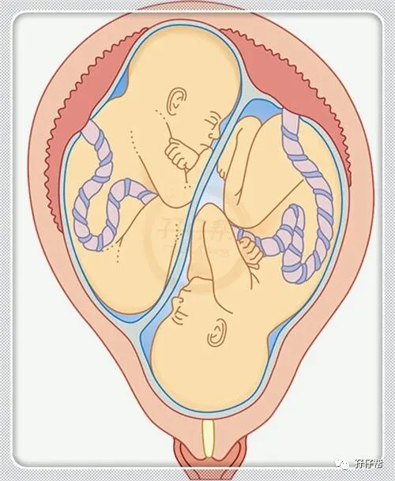
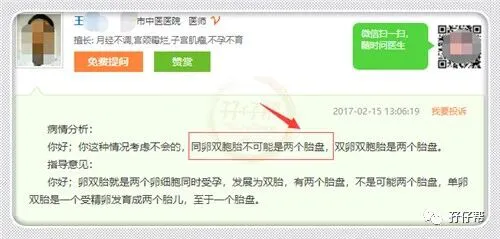


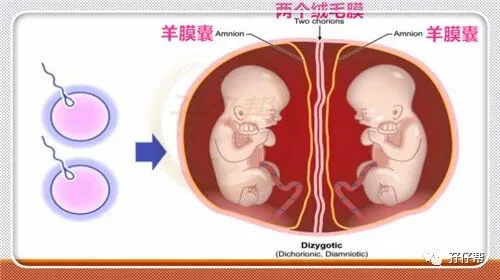
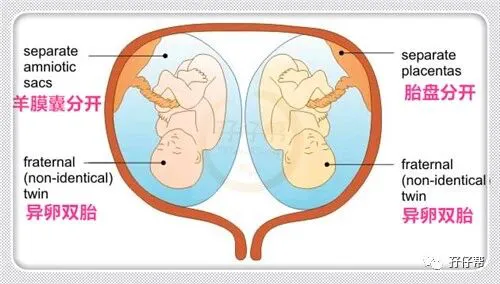
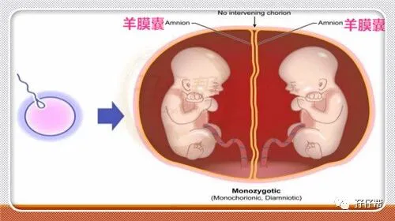
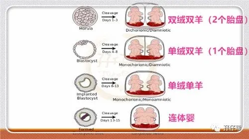
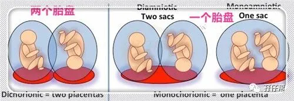
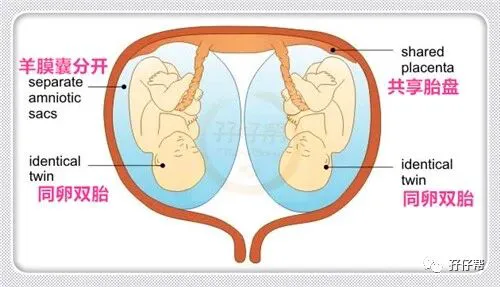
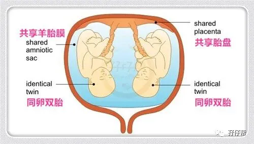
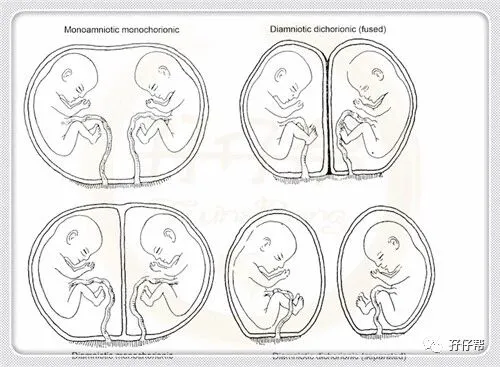
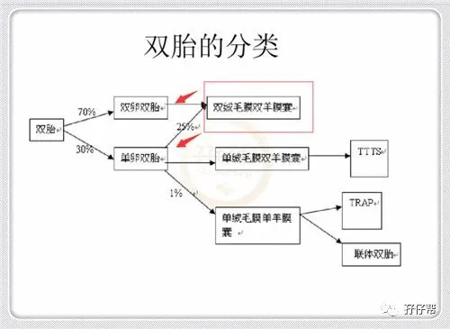
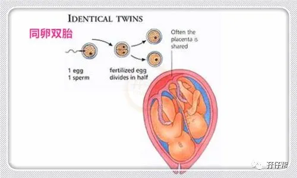
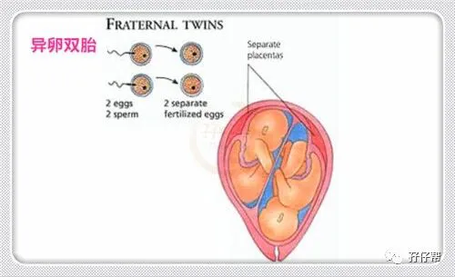
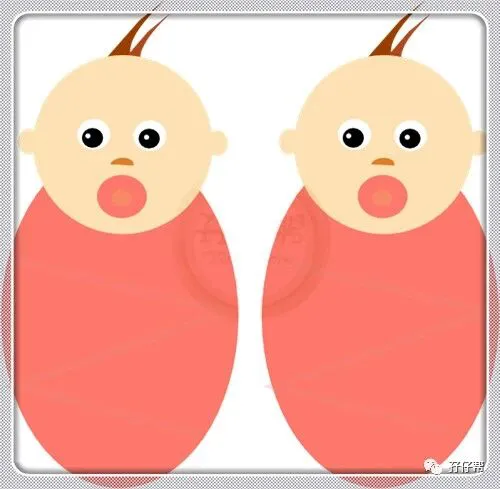
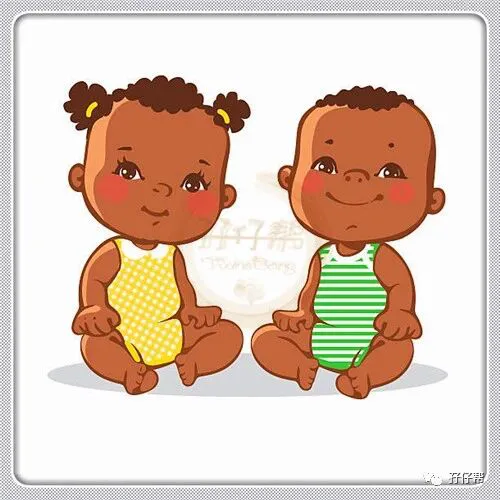
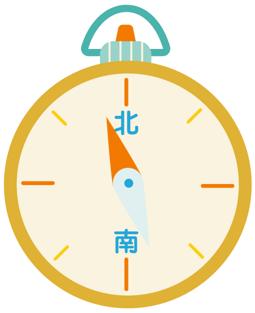
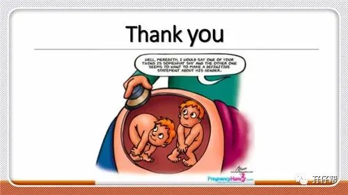